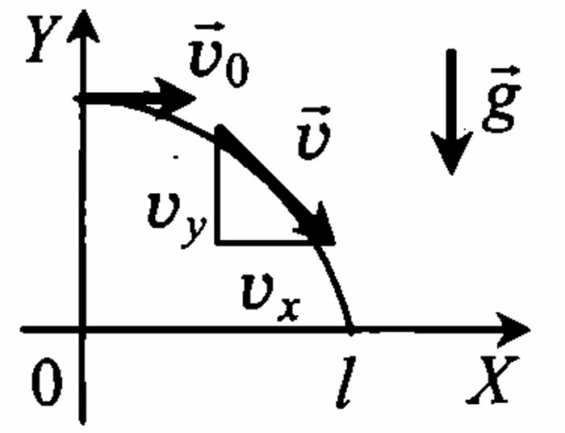

Механика
Кинематика
Механическое движение
Изучение курса физики принято начинать с механики. Механика
изучает самый простой и наглядный вид движения — механическое
движение.
Механическое движение— это изменение положения тела в
пространстве относительно других тел с течением времени.
По характеру движения точек различают три вида движения:
а) поступательное — это движение, при котором все точки тела
движутся одинаково и любая прямая, мысленно проведенная в теле,
остается параллельна сама себе;
б) вращательное — движение, при котором все точки тела движутся по окружностям;
в) колебательное — движение, которое повторяется или почти
повторяется. В отличие от вращательного движения колебательное
происходит в двух взаимно противоположных направлениях.
По виду траектории различают прямолинейное и криволинейное
движения (частный случай криволинейного движения — движение по
окружности); по скорости — равномерное и неравномерное; по ускорению — равноускоренное, равнозамедленное, ускоренное.
Основная задача механики — определять положение тела в пространстве в любой момент времени.
Материальная точка — это тело, размерами которого можно
пренебречь в условиях данной задачи. Тело можно принять за материальную точку, если оно движется поступательно или если его размеры много меньше расстояний, которые тело проходит.
Систему отсчета вводят для того, чтобы задать положение материальной точки в пространстве. В нее входят: тело отсчета (любое тело), система координат (одномерная, двухмерная или трехмерная) и
часы (начало отсчета времени совпадает с началом движения тела).
Решить основную задачу механики — определить координаты
тела в любой момент времени.
Траектория — линия, вдоль которой движется тело.
Путь l (м) — длина траектории.
Перемещение s (м) — это вектор, соединяющий начальное положение тела с
конечным. Обычно l > |s|; I = |s|, если тело
движется по прямой в одну сторону.
Подсказки
Проекции вектора перемещения на оси координат
Проекция вектора перемещения на ось ОХ: Sx = x - x0
Проекция вектора перемещения на ось ОУ: Sy = y - y0
Проекция вектора на ось равна нулю, если вектор перпендикулярен оси.
Знаки проекций перемещения: проекцию считают положительной, если движение от проекции начала вектора к проекции конца
происходит по направлению оси, и отрицательной, если против оси.
Модуль перемещения — это длина вектора перемещения:
|S| = S
Уравнение координаты (в общем виде):
x = x0 + sx
y = y0 + sy
Радиус-вектор — вектор, начало которого совпадает с началом
координат, а конец — с положением тела в данный момент времени.
Проекции радиуса-вектора на оси координат определяют координаты
тела в данный момент времени.
Радиус-вектор позволяет задать положение материальной точки
в заданной системе отсчета:
s = ΔR = R - R0
Равномерное прямолинейное движение
Равномерное прямолинейное движение — движение, при котором тело за любые равные промежутки времени совершает равные
перемещения.
Скорость при равномерном прямолинейном движении
Скорость V (м/с) — векторная физическая величина, которая по
казывает, какое перемещение совершает тело за единицу времени.
В векторном виде:
V = S / t = ΔR / Δt
В проекциях на ось OX:
Vx = Sx / t = Δx / Δt
Дополнительные единицы измерения скорости:
1 км/ч = 1000 м / 3600 с;
1 см/с = 0,01 м/с;
1 км/с = 1000 м/с;
1 м/мин = 1 м / 60 с;
Измерительный прибор — спидометр — показывает модуль скорости.
Знак проекции скорости зависит от направления вектора скорости
и оси координат.
Подсказки
sx = vxt.
График проекции скорости представляет собой график зависи мости проекции скорости от времени. Проекция скорости при равно мерном прямолинейном движении не изменяется: vx = const.
Подсказки
Геометрический смысл перемещения. При равномерном прямолинейном движении перемещение определяется по формуле s = vt. Такой же результат получается, если вычислить площадь фигуры под графиком скорости в осях (vx, t). Значит, для определения пути и модуля перемещения при прямолинейном движении необходимо вычислять площадь фигуры под графиком скорости в осях (vx, t).
График проекции перемещения — график зависимости проекции перемещения от времени. Проекция перемещения при равномерном прямолинейном движении: sx = vxt.
Подсказки
График координаты — график зависимости координаты тела от времени. Уравнение координаты при равномерном прямолинейном движении:
х = x0 + vxt.
Подсказки
Относительность механического движения
Под относительностью понимают зависимость чего-либо от выбора системы отсчета. Например, покой относителен; движение относительно и положение тела относительно.
Правило сложения перемещений
Векторная сумма перемещений:
s = s1 + s2
где s1 — перемещение тела относительно подвижной системы отсчета (ПСО); s2 — перемещение ПСО относительно неподвижной системы отсчета (НСО); s — перемещение тела относительно неподвижной системы отсчета (НСО).
Подсказки
Векторное сложение
c = a + b
Сложение векторов, направленных вдоль одной прямой
Сложение векторов, перпендикулярных друг другу
По теореме Пифагора
c = √ a2 + b2
Сложение векторов, расположенных под углом-α друг к друг
c = √ a2 + b2 - 2ab × cos(α)
c = √ a2 + b2 - 2ab × cos(180° - α)
Правило сложения скоростей
Векторная сумма скоростей v ′ = v + u , где v — скорость тела относительно подвижной системы отсчета (ПСО); u — скорость ПСО относительно неподвижной системы отсчета (НСО); v ′ — скорость тела относительно неподвижной системы отсчета (НСО).
Частные случаи сложения скоростей
v ⇑ ⇑ u
v ′ = v + u
v ⇓ ⇑ u
v ′ = v - u
v ⊥ u
v ′ = √v2 + u2
v ′ = v,
так как u = 0
v ′ = v,
так как u = 0
v ′ = v,
так как u = 0
v ′ = u,
так как v = 0
v ′ = u,
так как v = 0
v ′ = u,
так как v = 0
Относительная скорость
Векторная разность скоростей
vотн = v1 - v2 = v12,
где vотн - скорость первого тела относительно второго (относительная скорость); v1 — скорость первого тела; v2 — скорость второго тела.
Учтите: v21x = v2x - v
Средняя скорость
Неравномерное движение — движение с переменной скоростью. Это самый распространенный вид движения.
Средняя скалярная (путевая) скорость
vср = l / t,
где l — весь путь; t — время.
Средняя векторная скорость
vср = s / t,
где s — все перемещение; t — время.
Средняя скалярная скорость и модуль средней векторной скорости
vср ≥ |vср|
Равноускоренное прямолинейное движение
Равноускоренное прямолинейное движение — движение по прямой с постоянным ускорением (a = const).
Ускорение a (м/с2) — векторная физическая величина, показывающая, на сколько изменяется скорость тела за 1 с.
В векторном виде:
a = (v - v0) / t.
В проекциях на ось Ox:
ax = (vx - v0x) / t.
Прибор для измерения ускорения — акселерометр.
Знаки проекции ускорения зависят от направления вектора ускорения и оси ОХ. Рассмотрим случай, когда v0 ⇑ ⇑ OX:
При разгоне
ax > 0
При торможении
ax < 0.
График ускорения — график зависимости проекции ускорения от времени. Проекция ускорения при равноускоренном прямолинейном движении не изменяется: аx = const.
Подсказки
Мгновенная скорость — скорость в данный момент времени или в данном месте пространства.
Скорость при равноускоренном прямолинейном движении
В векторном виде:
v = v0 + at.
С учетом знака ускорения («+» разгон, «-» торможение):
v = v0 ± at.
График скорости — график зависимости проекции скорости от времени. Проекция скорости при равноускоренном прямолинейном движении:
vx = v0x + axt.
Подсказки
Геометрический смысл перемещения. Для определения пути и модуля перемещения при равноускоренном прямолинейном движении следует вычислять площадь фигуры под графиком скорости в осях (vx, t).
Подсказки
Основные формулы для расчета перемещения
s = v0t ± 1/2 • at2 (без конечной скорости),
s = (v2 - v20) / ± 2a (без времени),
s = (v + v0)t / 2 (без ускорения),
Внимание. Записанные выше формулы «работают» только до тех пор, пока сохраняется направление движения. Если направление движения изменяется (например, a ⇑ ⇓ v0), то движение следует разбивать на два этапа:
торможение: s = v0t - 1/2 • at2,
разгон: s =1/2 • at2.
Перемещение в n-ю секунду равноускоренного прямолинейного движения
sn = s(n) - s(n - 1),
где s(n) = v0n ± (an2)/2;
s(n - 1) = v0(n - 1) ± (a(n - 1)2) / 2
Уравнение координаты при равноускоренном прямолинейном движении позволяет определить кинематические величины равноускоренного прямолинейного движения даже в тех случаях, когда направление движения меняется.
Уравнение координаты
x = x0 + v0xt + (axt2) / 2
Уравнение проекции перемещения
sx = x′(t)0 = v0x + axt
Помните, что для определения знака проекций начальной скорости и ускорения следует сравнивать направления этих векторов с направлением выбранной оси.
Совместное движение двух тел
Уравнение координаты позволяет решать задачи на совместное
движение двух тел.
Уравнение координаты
x = x0 + v0xt + (axt2) / 2
Уравнение координаты при запаздывании
x = x0 + v0x(t - tзапазд) + (ax(t - tзапазд)2) / 2
Подсказки
Движение в поле силы тяжести
Свободное падение
Свободное падение происходит под действием только силы тяжести.
Свободное падение — свободно от сопротивления воздуха.
Все тела независимо от массы падают в вакууме с одинаковым ускорением.
Ускорение свободного падения всегда направлено вниз, к центру Земли и равно g = 9,8 м/с2 в задачах будем считать g = 10 м/с2.
Свободное падение по вертикали — пример равноускоренного прямолинейного движения.
Основные формулы для определения кинематических величин при свободном падении (вертикальный бросок)
В задачах на свободное падение единицы измерения всех величин следует сразу переводить в СИ.
Скорость
v = v0 ± gt
Перемещение, высота
s = h = (v + v0)t / 2;
s = h = v0t ± gt2 / 2;
s = h = (v2 - v20) / ±2g
Перемещение в n-ю секунду свободного падения (v0 = 0)
sn = s(n) - s(n - 1),
где s(n) = gn2 / 2,
s(n - 1) = g(n - 1)2 / 2
Уравнение координаты при свободном падении позволяет
определить кинематические величины свободного падения даже в тех
случаях, когда направление движения изменяется.
Уравнение координаты позволяет определить высоту тела в любой момент времени
y = y0 + v0yt + 1/2 • gt2.
Уравнение скорости
vy = v0y + gyt,
Слова-подсказки: «в момент падения на землю» — у = 0; «тело бросают от земли» — у0 = 0; «тело падает без начальной скорости», или «свободно падает» — v0 = 0; «тело достигло наибольшей высоты» — v = 0.
Горизонтальный бросок

Проекции начальной скорости:
v0x = v0; v0y = 0
Проекции ускорения свободного падения:
gx = 0; gy = -g
Проекции мгновенной скорости:
vx = v0; vy = -gt
Модуль мгновенной скорости v = √vx2 + vy2:
v = √v02 + (gt)2
Минимальная скорость:
vmin = v0
Максимальная скорость (конечная скорость при падении):
vmax = v
Горизонтальное смещение x = x0 + v0xt + 1/2 • gxt2:
x = v0t
Мгновенная высота y = y0 + v0yt + 1/2 • gyt2:
y = h0 - 1/2 • gt2
Время падения (у - 0):
tпад = √ (2h0 / g)
Дальность полета:
l = v0tпад = v0 √ (2h0 / g)
Частный случай горизонтального броска
Бросок с горы
α — угол наклона плоскости к горизонту,
s — расстояние от места бросания до места падения.
Из рисунка видно: дальность полета l = s cosα, начальная высота h0=s sin а
Бросок под углом к горизонту
Проекции начальной скорости:
v0x = v0cosα
v0y = v0sinα
Проекции ускорения свободного падения:
gx = 0
gy = -g
Проекции мгновенной скорости:
vx = v0cosα
vy = v0sinα -gt
Модуль мгновенной скорости:
v = √vx2 + vy2
Минимальная скорость, скорость в верхней точке траектории:
vmin = v0cosα = vh
Максимальная скорость, начальная скорость, конечная скорость:
vmax = v0 = v
Горизонтальное смещение x = x0 + v0xt + 1/2 • gxt2:
x = v0cosαt
Мгновенная высота y = y0 + v0yt + 1/2 • gyt2:
y = v0sinαt - 1/2 • gt2
Время подъема (vy = 0):
tпод = v0sinα / g
Полное время полета:
tполн = 2tпод = 2v0sinα / g
Наибольшая высота подъема:
h = v02sin2α / 2g
Дальность полета:
l = v022sinαcosα / g = v02sin2α
Частный случай броска под углом к горизонту
Бросок с некоторой высоты
Уравнение координаты x
x = v0cosαt
Уравнение координаты y
y = h0 + v0sinαt - 1/2 • gt2
Движение по окружности с постоянной по модулю скоростью
Криволинейное движение — движение, траекторией которого является кривая линия. Вектор ско- роста в любой момент времени направлен по касательной к траектории. Любой участок криволинейного движения можно представить в виде движения по дуге окружности или по участку ломаной.
Движение по окружности с постоянной по модулю скоростью — простейший вид криволинейного движения. Это движение с переменным ускорением.
• Траектория движения — окружность.
• Вектор скорости всегда направлен по касательной к окружности.
• Направление скорости постоянно изменяется.
• Ускорение, которое изменяет направление скорости, называют центростремительным.
• Центростремительное ускорение не меняет модуля скорости.
• Центростремительное ускорение направлено к центру окружности.
Величины, характеризующие движение по окружности с постоянной по модулю скоростью
Период Т (с) — время одного полного оборота:
T = t / N = 1 / ν.
Частота ν (Гц) — число полных оборотов за 1 с:
ν = N / t = 1 / T.
Линейная скорость v (м/с) показывает, какой путь проходит тело за 1 с:
v = l / t = 2πR / t = 2πRν = 2πRN / t = ωR.
Угловая скорость ω (рад/с) показывает, на какой угол поворачивает тело за 1 с:
ω = φ / t = 2π / T = 2πv = 2πN / t = v / R.
Центростремительное ускорение ац (м/с2) изменяет направление вектора скорости:
aц = v2 / R = ω2 R = 4π2R / T2 = 4π2Rν2.
Число оборотов N — число полных оборотов за время t:
N = t / T = ν t.
Подсказки
Динамика
Три закона Ньютона
Динамика изучает причины движения тел и способы определения ускорения.
Инерция — явление, при котором тело сохраняет состояние покоя или равномерного прямолинейного движения (т. е. в этих случаях отсутствует ускорение).
Инерциальные системы отсчета — системы отсчета, относительно которых наблюдается инерция, а также те, которые движутся равномерно и прямолинейно относительно ИСО. (ИСО — системы, ускорение которых равно нулю.)
Первый закон Ньютона: существуют такие системы отсчета, называемые инерциальными, относительно которых тела движутся равномерно и прямолинейно или находятся в состоянии покоя, если на них не действуют другие тела или их действия скомпенсированы.
Инертность — физическое свойство, заключающееся в том, что любое тело оказывает сопротивление изменению его скорости (как по модулю, так и по направлению).
Проявление инертности чаще всего наблюдается в движущемся транспорте. Например, при резком увеличении скорости все пассажиры отклоняются назад, при торможении — вперед, при повороте направо все отклоняются влево и т.п.
Масса m (кг) — физическая величина, являющаяся мерой инертности тела.
m = ρ * V,
где ρ(кг/м3) - плотность, V (м3) — объем.
Измерительный прибор — весы.
Дополнительные единицы измерения:
1 т = 103 кг, 1 г = 10-3 кг, 1 мг = 10-6 кг.
Сила F (Н) — количественная характеристика действия одного тела на другое. Сила — векторная величина, которая имеет числовое
значение, направление в пространстве, точку приложения. Точкой
приложения всех сил в динамике (кроме веса) является центр тяжести тела. Измерительный прибор — динамометр.
Второй закон Ньютона: сила, действующая на тело, равна произведению массы этого тела на ускорение, которое сообщает эта сила.
F = ma
Учтите: направление силы совпадает с направлением ускорения F ⇑ ⇑ a , так как m > 0.
Равнодействующая сила — векторная сумма всех сил, действующих на тело:
R = ∑F
Второй закон Ньютона: если на тело действуют несколько сил, то их равнодействующая R будет равна произведению массы на ускорение.
Учтите: направление равнодействующей силы совпадает с направлением ускорения R ⇑ ⇑ a, так как m > 0.
Третий закон Ньютона: тела действуют друг на друга с силами, направленными вдоль одной прямой, противоположными по направлению и равными по модулю.
F1 = -F2
Учтите: силы, возникающие при взаимодействии, имеют одинаковую природу, приложены к разным телам, поэтому не компенсируют друг друга.
Сила всемирного тяготения
Сила всемирного тяготения — сила, с которой все тела притягиваются друг к другу. Эта сила наиболее заметно проявляется при взаимодействии массивных тел (звезд, планет, их спутников).
выполняется для материальных точек и сферических тел.
Закон всемирного тяготения: все тела в природе притягиваются друг к другу с силой, прямо пропорциональной произведению масс этих тел и обратно пропорциональной квадрату расстояния между ними.
Fтяг = Gm1m2 / r2,
где G = 6,7 • 10-11 Н • м2/кг2 — гравитационная постоянная, численно равная силе гравитационного притяжения двух тел массой по 1 кг каждое, находящихся на расстоянии 1 м одно от другого;
т (кг) — масса тела;
r (м) — расстояние между центрами тел.
Сила всемирного тяготения направлена по линии, соединяющей центры тел.
Сила тяжести
Сила тяжести — сила, с которой планета (Земля) притягивает к себе окружающие тела. Сила тяжести имеет гравитационную природу. Направление силы тяжести — вертикально вниз или к центру планеты:
Искусственный спутник планеты — тело, которое обращается вокруг планеты. Движение искусственных спутников происходит по эллипсам, но мы будем рассматривать упрощенный частный случай — движение по окружности. Скорость кругового движения, при котором радиус орбиты равен радиусу планеты, называют первой космической скоростью.
М (кг) — масса планеты, m (кг) — масса спутника, R (м) — радиус планеты, Н (м) — высота спутника над поверхностью планеты, r (м) — расстояние от центра планеты до спутника (г = R + Н — радиус орбиты), v (м/с) — линейная скорость спутника.
Закон движения ИСЗ — второй закон Ньютона
Fтяж = maц.с. или GMm / (R + Н)2 = maц.с.
Второй закон Ньютона
Ускорение свободного падения:
aц.с. = g
GMm / (R + Н)2 = mg
Скорость кругового движения:
aц.с. = v2 / r
GMm / (R + Н)2 = mv2 / R + Н
Период обращения спутника:
aц.с. = 4π2r / T2
GMm / (R + Н)2 = 4mπ2(R + Н) / T2
На высоте (H ≠ 0; r = R + H)
Сила тяжести:
Fтяж = GMm / (R + H)2 = GMm / r2
Ускорение свободного падения:
g = GM / (R + H)2 = GM / r2
Скорость кругового движения:
v = √(GM / R + H) = √(GM / r)
v = 3√(2πGM / T)
Период обращения спутника:
T = 2π√((R + H)3 / GM) = 2π√(r3 / GM)
На поверхности планеты (H = 0)
Fтяж = mg0 = GMm / R2
g0 = GM / R2
v1 = √(GM / R)
T = 2π√((R)3 / GM)
С учетом плотности планеты (Н = 0; M = ρ 4/3πR3)
Ускорение свободного падения:
g0 = 4/3GπRρ
Скорость кругового движения:
v1 = 2R√(πGρ / 3)
Период обращения вокруг спутника:
T = √(3π / Gρ)
Если не указана масса планеты, то GM ≠ g0R2, H ≠ 0
Скорость кругового движения:
v √(g0R / (R + H)) = √(g0R / r)
Период обращения вокруг спутника:
T = 2π√((R + H)3 / g0R2) = 2π√(r3 / g0R
Для Земли
Ускорение свободного падения:
g0 = 9,81 м/c2 ≂ 10 м/c2
Скорость кругового движения:
v1 = 7,9 км/c
Период обращения спутника:
T = 24 ч = 86400 с
Сила упругости
Сила упругости — сила, которая возникает при деформациях тел, как ответная реакция на внешнее воздействие. Сила упругости имеет электромагнитную природу.
Деформация — изменение формы или объема тела. Виды деформаций: растяжение; сжатие; изгиб (комбинированный случай одновременного сжатия и растяжения); сдвиг; кручение (частный случай деформации сдвига).
Упругие деформации исчезают после снятия нагрузки.
Пластические деформации остаются после снятия нагрузки.
Только для упругих деформаций выполняется закон Гука.
Закон Гука: модуль силы упругости, возникающей при деформации тела, пропорционален его удлинению.
Fупр = kx,
х (м) — деформация или абсолютное удлинение х = |/-/0| = А/, где
l0 (м) — начальная длина тела, l (м)— длина деформированного тела;
k (Н/м) — жесткость тела, к = ES / l0, где E (Н/м2 = Па) — модуль упругости (модуль Юнга) — характеризует сопротивляемость материала упругой деформации растяжения или сжатия, S (м2) — площадь сечения тела.
Сила упругости направлена противоположно перемещению частиц при деформации.
Подсказки
Силы трения
Сила трения возникает при движении тел или при попытке сдвинуть их с места. Относится к силам электромагнитной природы. Трение бывает сухое и жидкое. Сухое делится на три вида: трение покоя, трение скольжения и трение качения.
Трение скольжения возникает при скольжении одного тела по поверхности другого. Направление трения скольжения противоположно скорости движения (Fтр. ск. ⇑ ⇓ v):
Fтр. ск. = μN или Fтр. ск. = μFдавл,
где μ — коэффициент трения, N (Н) — сила реакции опоры,
Fдавл (Н) — сила нормального давления.
Способы уменьшения трения: выравнивание поверхностей; введение смазки; замена на трение качения.
Учтите: если движение происходит по гладкой поверхности, то
силу трения учитывать не надо; сила трения скольжения не зависит
от площади соприкасающихся тел.
Трение покоя возникает при попытке сдвинуть предмет с места.
Трение покоя противоположно приложенной силе (направлению возможного движения).
Учтите: величина силы трения покоя может принимать значения,
лежащие в пределах:
0 < Fтр. пок. < Fтр. ск..
Алгоритм определения силы трения покоя
1. Найти силу трения скольжения
Fтр. ск. = μN
2. Сравнить ее с силой F, приложенной к телу, и сделать вывод:
если F < Fтр. ск., то Fтр. пок. = F и a = 0 ;
если F ≥ Fтр. ск., то Fтр. пок. = Fтр. ск..
Жидкое трение (сила сопротивления) возникает при движении в жидкостях и газах. Направление жидкого трения противоположно скорости движения (Fсопр ⇑ ⇓ v). Жидкое трение зависит от формы и скорости тел. При малых скоростях сила сопротивления пропорциональна скорости: Fсопр = kv, а при больших — квадрату скорости:
Fсопр = kv2
Алгоритм решения задач на второй закон Ньютона
1. Кратко записать условие задачи. Все единицы измерения перевести в СИ.
2. Сделать чертёж. На нем указать:
1) Изучаемое тело;
2) Направление всех сил;
Подсказки
3) направление ускорения;
4) оси координат
Совет: направление одной оси должно совпадать с направлением ускорения.
3. Записать второй закон Ньютона в векторном виде.
4. Записать второй закон Ньютона в проекциях на оси координат.
5. Решить задачу в общем виде.
6. Подставить числовые значения и найти искомую величину.
7. Сделать проверку размерностей.
Применение законов Ньютона
Силы
1) Сила тяжести и сила реакции опоры. Второй закон Ньютона в векторной форме:
N + mg = ma
2) Сила тяжести и сила натяжения нити. Второй закон Ньютона в векторной форме:
T + mg = ma
3) Сила тяжести и сила сопротивления воздуха. Второй закон Ньютона в векторной форме:
mg + Fc = ma
4) Сила тяжести, сила сопротивления и архимедова сила Второй закон Ньютона в векторной форме:
FA + mg + Fc = ma
Равномерное вертикальное движение (а = 0)
1) Сила тяжести и сила реакции опоры.
OY: N - mg = 0
2) Сила тяжести и сила натяжения нити.
OY: T - mg = 0
3) Сила тяжести и сила сопротивления воздуха.
OY: FA - mg - Fc = 0
Спуск
1) Сила тяжести и сила реакции опоры.
 OY: mg - N = 0
OY: mg - N = 0 2) Сила тяжести и сила натяжения нити.
OY: mg - T = 0
3) Сила тяжести и сила сопротивления воздуха.
OY: mg - Fc = 0
4) Сила тяжести, сила сопротивления и архимедова сила.
OY: mg - FA - Fc = 0
Ускоренное вертикальное движение (а ≠ 0)
1) Сила тяжести и сила реакции опоры.
OY: N - mg = ma
2) Сила тяжести и сила натяжения нити.
OY: T - mg = ma
3) Сила тяжести и сила сопротивления воздуха.
OY: mg + Fc = ma
4) Сила тяжести, сила сопротивления и архимедова сила.
OY: FA - mg - Fc = ma
Спуск
1) Сила тяжести и сила реакции опоры.
OY: mg - N = ma
2) Сила тяжести и сила натяжения нити.
OY: mg - T = ma
3) Сила тяжести и сила сопротивления воздуха.
OY: mg - Fc = ma
4) Сила тяжести, сила сопротивления и архимедова сила.
OY: mg - FA - Fc = ma
Движение с учетом силы трения
Второй закон Ньютона в векторной форме:
mg + N + Fт + Fтр = ma
OX: Fт - Fтр= ma ;
OY: N - mg = 0
2. Равнозамедленное движение
Второй закон Ньютона в векторной форме:
mg + N + Fтр = ma ;
OX: -FTp = -ma;
OY: N - mg = 0
3. Тело прижали к вертикальной стене
Второй закон Ньютона в векторной форме:
mg + N + F + Fтр.п.= ma ;
OX: N - F = 0 ;
OY: Fтр.п. - mg = 0
Совет. Будьте внимательны в тех случаях, когда сила тяги направлена под углом к поверхности, по которой происходит движение. Сначала следует разложить эту силу на проекции вдоль осей ОХ и ОУ. Помните, что в этих случаях N ≠ mg.
Второй закон Ньютона в векторной форме:
mg + N + Fт + Fтр = ma ;
OX: Fтcosα - Fтр= ma ;
OУ: Fтsinα + N - mg = 0
5. Сила тяги направлена под углом к горизонту (вниз)
Второй закон Ньютона в векторной форме:
mg + N + Fт + Fтр = ma;
ОХ : Fтcosα - Fтр= ma;
ОУ: N - Fтsinα - mg = 0
6. Подъем под действием силы тяги, образующей угол с вертикалью
Второй закон Ньютона в векторной форме:
mg + N + Fт + Fтр = ma;
OX: N - Fтsinα = 0;
OY: Fтcosα - Fтр - mg = ma
Алгоритм решения задач на движение по наклонной плоскости
1. Провести ось ОХ вдоль наклонной плоскости. Ее направление
совпадает с направлением движения (или ускорения).
2. Через центр тела провести оси ОУ перпендикулярно оси ОУ.
3. Сила тяжести всегда направлена вертикально вниз.
4. Построить проекции силы тяжести на оси ОУ и ОУ (mg)x и
(mg)y. Сила реакции опоры перпендикулярна наклонной плоскости и
в данном случае равна по модулю (mg)y.
5. Направление силы тяги определяется из условия задачи.
6. Сила трения противоположна направлению скорости тела (или
направлению возможного движения).
Учтите: если тело движется по гладкой наклонной плоскости, то Fтр = 0.
7. Указать направление ускорения.
Учтите: если тело движется с постоянной скоростью или покоится, то a = 0.
Подсказки
Подсказки
Второй закон Ньютона в векторной форме: mg + N = ma
ОХ: mg sinα = ma
OY :N - mg cosα = 0

Второй закон Ньютона в векторной форме: mg + N + Fтр = ma
ОХ: mg sinα - Fтр.п.= 0
OY:N - mg cosα = 0
Второй закон Ньютона в векторной форме: mg + N + Fтр + F = ma
ОХ: F + Fтр mg sinα = 0
OY: N - mg cosα = 0
Второй закон Ньютона в векторной форме: mg + N + Fтр + Fт = ma
OX: Fт - Fтр mg sinα = ma
OY: N - mg cosα = 0
Второй закон Ньютона в векторной форме: mg + N + Fтр + Fт = ma
0X: Fт - Fтр mg sinα = 0
0У: N - mg cosα = 0
Вес тела
Вес тела — сила, с которой тело вследствие притяжения к Земле действует на опору или подвес (сила, с которой тело давит на опору или растягивает подвес), относится к силам электромагнитной природы. Измеряется динамометром. Единица измерения — ньютон (Н).
P ⇑ ⇓ N; P ⇑ ⇓ T
P = N или P = T, или P = Fупр
Применение второго и третьего законов Ньютона для определения веса
Второй закон Ньютона в векторной форме:
N + mg - ma или T + mg = ma
OY: N - mg = 0 или ОУ: Т - mg = О
Р0 = mg
Второй закон Ньютона в векторной форме:
N + mg = ma
OY: N - mg = ma;
P⇑ = m(g + а)
Второй закон Ньютона в векторной форме:
N + mg = ma;
ОУ: mg - N = ma; Р⇓ = m(g - а)
Второй закон Ньютона в векторной форме:
N + mg = maц;
ОУ: mg - N = aц;
Р = m(g - ац)
Второй закон Ньютона в векторной форме:
N + mg = maц;
ОУ: N - mg = maц; Р = m(g + ац)
Второй закон Ньютона в векторной форме:
T + mg = maц
В точке А
ОУ: Т + mg = maц.
P = m(ац - g)
В точке В
ОУ: T - mg = maц.
P = m(ац + g)
Учтите: центростремительное ускорение всегда направлено к центру окружности и равно aц = v2 / R = ω2R = 4π2R / T2 = 4π2Rν2
Алгоритм решения задач на движение связанных тел
1. Кратко записать условие задачи, все величины перевести в СИ.
2. Сделать чертеж. На нем указать:
1) все силы, действующие на каждое тело;
2) направления ускорений;
3) оси координат.
3. Записать второй закон Ньютона в векторном виде для каждого
тела.
4. Записать второй закон Ньютона в проекциях на оси координат.
5. Записать третий закон Ньютона.
6. Решить задачу в общем виде. Обычно при решении избавляются от неизвестной силы натяжения нити или ускорения.
7. Подставить числовые значения.
8. Сделать проверку размерностей.
Учтите: нить нерастяжима — тела движутся с одинаковыми по
модулю ускорениями; нить невесома, блок идеален (масса блока ничтожна мала, трения нет) — модуль силы натяжения нити в любой её точке один и тот же. По третьему закону Ньютона T = -T или
|T| = |T|; нить нерастянута — у тел могут быть разные ускорения,
Т = 0; сила давления на блок при движении грузов Fдавл = T1 + T1
Динамика движения по окружности с постоянной по модулю скоростью
1. Построить тело. 2. Показать направление всех сил, прилагая их к центру тела:
Подсказки
3. Направление центростремительного ускорения всегда направлено к центру окружности, по которой происходит движение.
4. Через центр тела провести оси координат. Желательно, чтобы
направление одной оси совпадало с направлением ускорения, а другая
была перпендикулярна ей.
5. Построить проекции сил на оси OX и OY.
Законы сохранения
Импульс
Импульс тела p (кг · м/с) — векторная физическая величина,
равная произведению массы тела на его скорость:
p = m v
Направление импульса совпадает с направлением скорости p ⇑ ⇑ v, так как m > 0.
Импульс тела равен нулю, если тело не движется (v = 0).
Повторение: уравнение проекции скорости:
vx = x'(t) = v0x + ax t
Относительный импульс
Произведение массы тела на относительную скорость:
p1отн2 = m1v1отн2 = m1(v1 - v2),
где p1отн2 — импульс первого тела относительно второго (относительный импульс); m1 — масса первого тела; v1 — скорость первого тела; v2 — скорость второго тела.
Изменение импульса тела — векторная разность между конечным (p) и начальным (p0) импульсом тела:
Δp = p - p0 = p + (-p0)
Реактивное движение
Закон сохранения импульса
Механическая работа
Механическая работа. Её виды
Мощность
Закон сохранения механической энергии